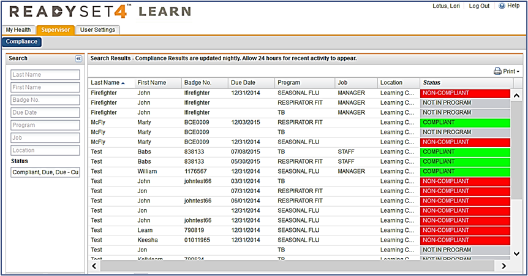
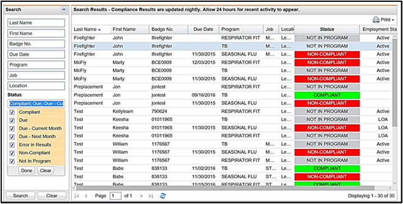

The purpose of the Supervisor tab is to enable supervisors (i.e. managers) to check the compliance status of their staff for Flu, TB, and Respirator Fit programs that are maintained in ReadySet. By default the tab shows employees who have either an upcoming or past Due Date for a flu shot, respirator fit test, or TB visit, but you can search for all your staff and statuses.
The Supervisor tab displays when the supervisor logs into ReadySet with their My Health username/password. No client setup is required. The Supervisor tab only displays the names of the supervisor’s direct staff members. The data used to populate the Supervisor Tab output is dependent on the supervisor staff records fed to ReadySet by your facility’s HR system. Therefore, if there are issues such as accuracy and spelling of staff members’ names in the Supervisor tab, the source for these issues is likely in the HR database.
This Quick Guide provides the basic steps for checking employee compliance for the following programs:
- Seasonal Flu
- Respirator Fit Program, including both Fit Compliance for N95 type masks and Training Compliance for PAPR/CAPR type masks
- TB Program
The process used by the supervisor in ReadySet is determined by the facilities’ EHS Clinic workflow and policies.
Check the Compliance Status of the Supervisor’s Staff
- Login to ReadySet with your My Health username and password; the screen will display the My Health and Supervisor tabs.
- Click the Supervisor tab.
The Supervisor work space is displayed:

The example above shows all the staff assigned to the Supervisor, along with their compliancy status, defined as follows:
- Compliant (Green) – The participant's due date is in the future.
- Due Next Month (Green) – The participant's due date is “next month”.
- Due Current Month (Green) – The participant's due date is in “the current month”.
- Due (White) – The participant's due date is in a “season” or time frame, and they have not completed the program. For example, Seasonal Flu vaccinations are usually given between August and December. Once the program is completed (e.g. participant is vaccinated), they will become “Compliant” until the next season.
- Non-Compliant (Red) – The participant's due date is in the past OR is in the next month based on the program rules. For example, if someone’s due date is 3/14 and the date is 3/16, depending on the program they may remain in the status “Due – Current Month”.
- Not in Program (Gray) – The participant does not have charting form for the specific program, or the charting form doesn’t have a “Next Due Date” entered.
- Error in Results (White) – The participant has multiple program charting forms with different “Next Due Dates”. The system is not sure which date to adhere to. You may need to use Edit Appointments to either Void or correct the form.
View Compliance Status Based on Search Criteria
- Use the Search panel at the left to view Compliance status based on:
- Employee Name
- Badge Number
- Due Date (Month)
- Program Type
- Location
- Job
- Location
- Compliance Status

- Click Search at the bottom when you have defined your search criteria and your information will display.
Frequently Asked Questions (FAQ)
Q: I am the EHS Manager, but not a supervisor. Can I test or troubleshoot the Supervisor tab?
A: No. Only supervisors defined in the HR feed have access to the Supervisor area.
Q: Is the same compliance algorithm used for Flu? Assuming it is based on flu end date, are they compliant given the same rules and Respirator and TB?
A: No. The “Seasonal Flu End Date” determines seasonal Flu compliance. Respirator and TB compliance are based on the “Next Due Date” charted in the Fit Test and TB charting forms.
Q: The staff list shown on the Supervisor page is incorrect. What should I do?
A: Check with your HR system administrator to verify that the Supervisor is listed correctly in the HR system. If not, an HR system update will automatically update ReadySet 24 hours after the change.
Q: How often is the Supervisor compliancy list updated?
A: Nightly